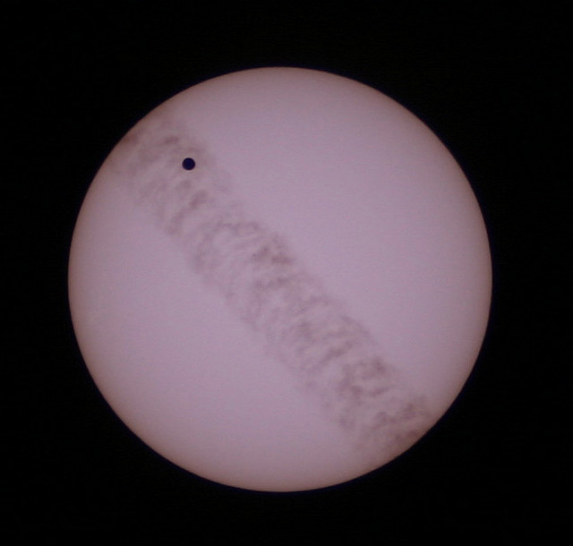
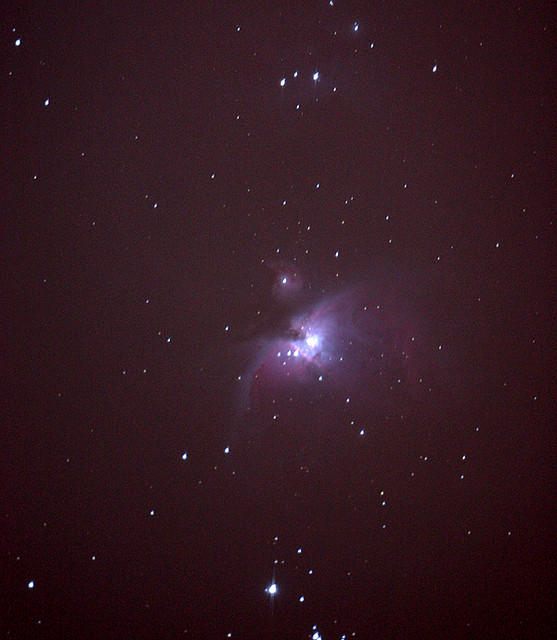
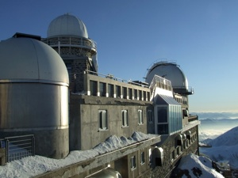
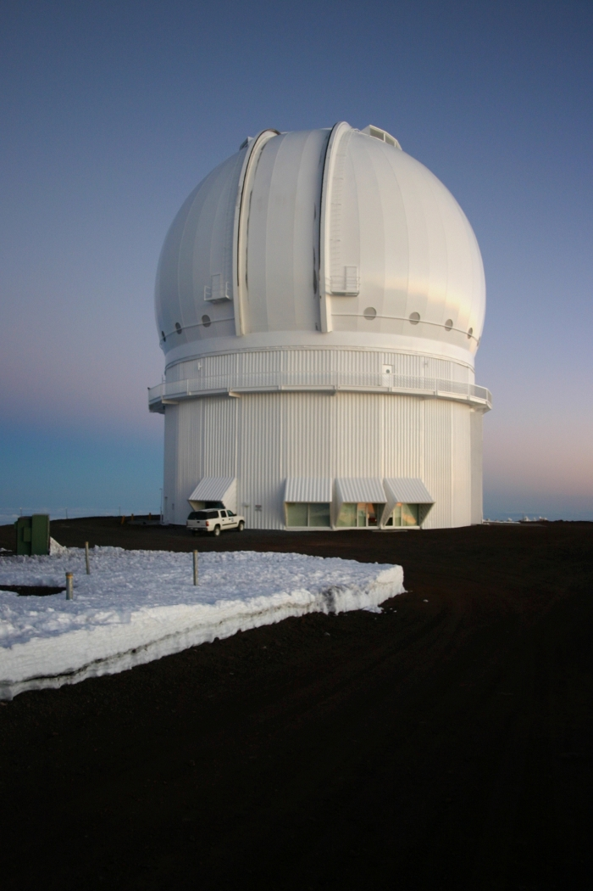
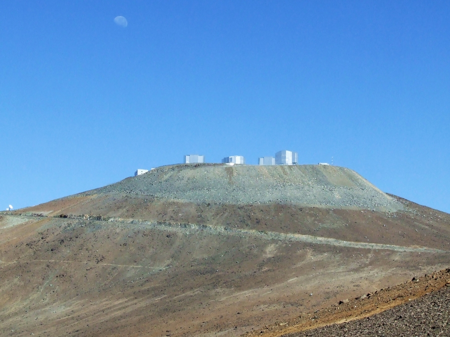
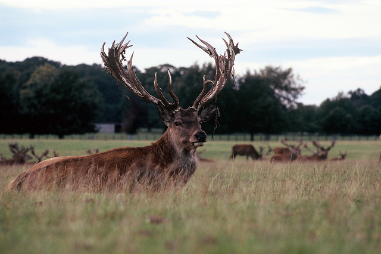

I have always interested in space and the universe, but it was not until taking A-level physics that my interest really kicked off. One of my A-level teachers was something of an amateur astronomer, as such our course included the optional astrophysics module. This really tweaked my interest in astronomy, after some time I got myself my first telescope, a TAL 1 newtonian reflector. I would spend time doing drawings of messier objects, from that point on I was hooked.
I soon went to university to study astrophysics, during my undergraduate at the University of Hertfordshire, I used and owned many telescopes and went to sky camps whenever I could with class mates David and Andy. For a time I was also a member of the Loughton Astronomical Society and I dabbled in astrophotography from time to time first with CCD cameras and then DSLRS.

Venus Transit 2004 and Orion taken with my Canon 300d
During the 2002 and 2003 university year, I went on placement to the Pic du Midi Observatory in France, a great experience which lead to my professional astronomy career path.

Pic du Midi
In 2004 I moved to Canada to pursue a Masters degree at Queen's University in Kingston Ontario, and later stayed to pursue a PhD which is close to completion. During my time at Queen's I took part in outreach activities as much I could. I helped with the IYA 2009 effort in Kingston, created an astronomy show on the campus radio station (CFRC) and from April 2008 to April 2009 was the observatory co-ordinator at Queen's.

The poster for my old radio show
My university career allowed me to travel a lot, highlights being; able to spend more time at Pic du Midi, observing with the CFHT on Mauna Kea, Hawaii and spending 3 months at ESO in Chile, where I got to spend a week at the Paranal observatory.

CFHT and VLT at Paranal
I am also an avid photographer using both film and digital, please click on the photography page for links to my photos of observatories, cities and wildlife.

Deer on film, taken at Woburn.
I have also taught introductory astronomy at the University of Ontario Institute of Technology.
Media Links::
Time-lapse video I made from quebec Canada:
Here
Promotional Video Made for IYA 2009 in Kingston:
Here
A younger version of me on Queen's TV:
Here
My old podcast (astrarium)
Here
MY CV